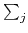
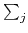

You are in a library equipped with bookracks that move on rails. There are many parallel rails, i.e., the bookracks are organized in several rows, see figure:
To borrow a book, you have to find the librarian, who seems to hide on the opposite side of the bookracks. Your task then is to move the racks along the rails so that a passage forms. Each rack has a certain integer width, and can be safely positioned at any integer point along the rail. (A rack does not block in a non-integer position and could accidentally move in either direction). The racks in a single row need not be contiguous -- there can be arbitrary (though integer) space between two successive bookracks. A passage is formed at position k if there is no bookrack in the interval (k, k + 1) in any row (somehow you don't like the idea of trying to find a more sophisticated passage in this maze.)
Moving a rack requires a certain amount of efflort on your part: moving it in either direction costs 1. This cost does not depend on the distance of the shift, which can be explained by a well known fact that static friction is considerably higher than kinetic friction. Still, you are here to borrow a book, not to work out, so you would like to form a passage (at any position) with as little efflort as possible.
Two space separated integers R and L
(1 R, 1
R, 1 L
L 106) are given in the
first line of an input instance. They denote the number of rows and the width of each and
every row, respectively. Then R lines with rows descriptions follow. Each such line starts
with an integer ni, followed by ni integers
ai, 1, ai, 2,...ai, ni, all
separated by single spaces. Number ai, j denotes either the width of a bookrack when
ai, j > 0 or a unit of empty space when
ai, j = 0. Note that for any row
i,ai, j equals L minus the number of ai, j that are equal to zero. You may
assume that
n1 + n2 + ... + nR
106) are given in the
first line of an input instance. They denote the number of rows and the width of each and
every row, respectively. Then R lines with rows descriptions follow. Each such line starts
with an integer ni, followed by ni integers
ai, 1, ai, 2,...ai, ni, all
separated by single spaces. Number ai, j denotes either the width of a bookrack when
ai, j > 0 or a unit of empty space when
ai, j = 0. Note that for any row
i,ai, j equals L minus the number of ai, j that are equal to zero. You may
assume that
n1 + n2 + ... + nR 2*107. Moreover,
there will be at least one 0 in the description of each row, which means that creating a
passage is always possible.
2*107. Moreover,
there will be at least one 0 in the description of each row, which means that creating a
passage is always possible.
In the first line, your program should output the minimum cost of making a passage
through the bookracks. In the second line, it should print out the increasing sequence
of all the positions at which a minimum cost passage can be formed.
1 4 10 8 1 2 1 0 1 2 0 1 7 2 2 2 1 0 1 0 6 1 3 2 0 2 1 7 2 1 2 0 2 1 0
3 8 9